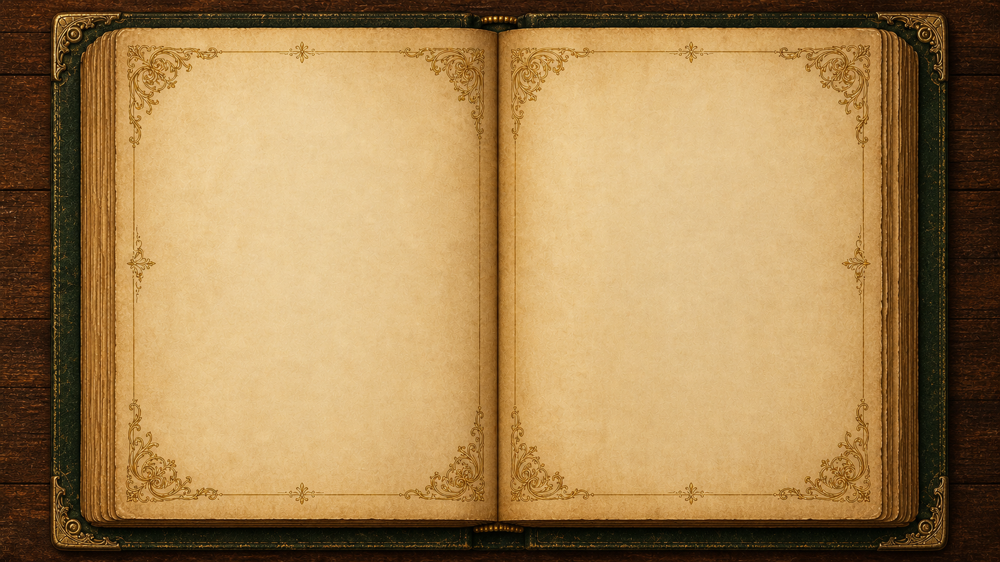
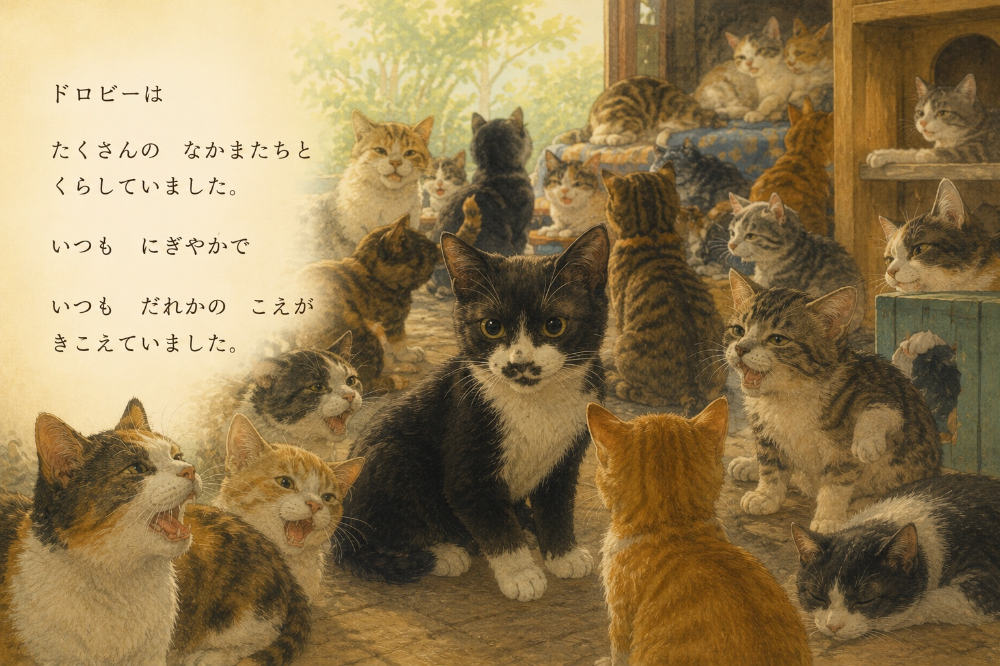
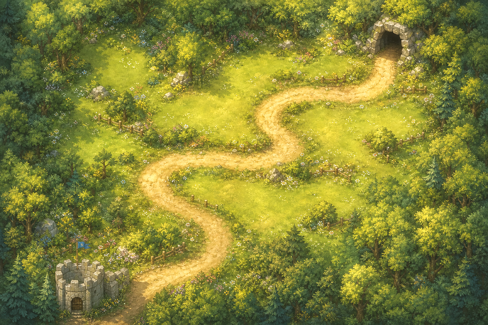
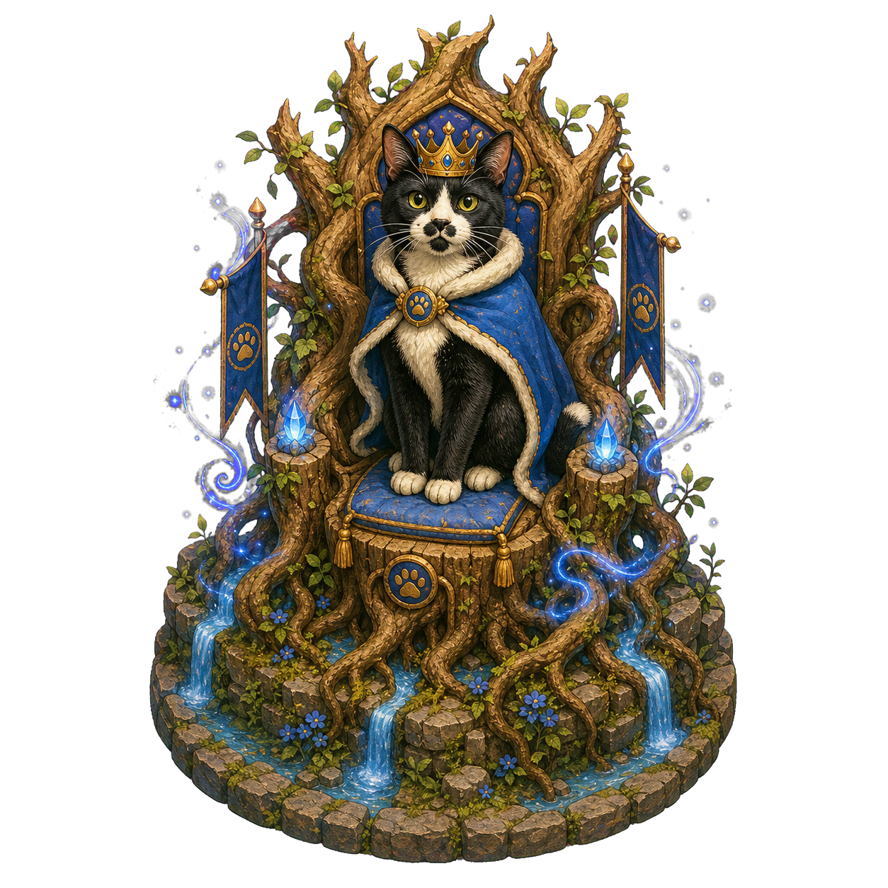

遊ぶモードを選んでください
0%にするとミュートになります。
Version
甘茶の音楽工房amachamusic.chagasi.com
効果音ラボ
Y T
読みたい本をえらんでください
出会ったネズミの特徴と対策を確認できます。

Wave 1で まけてしまった…
うぅ…ぜんぶ たべられちゃった…ぼくが まもれなかった…
だいじょうぶだよ、ドロビー。いっしょにがんばろうね！
Wave 1へ、別の作戦で挑戦できます。
再挑戦後は準備フェーズへ戻ります。塔の売却・設置・強化を組み替えてみましょう。

ドロビーの物語をすべて集めました。
この塔を売却しますか？
🍖 研究用おやつ：0
合計研究レベル：0 配置上限：16 / 24
🔒 リトライ中は研究できません（研究内容は確認できます）
ドロビー「なんだろう？あそこに おうちがあるよ！」
ひまわり「おやつでみんなを もっとつよくできるみたい！」
研究所では、おやつを使って永続強化ができます。研究内容はエンドレスモードでも引き継がれます。


The forest recognizes a true guardian.
一定時間、猫たちの攻撃速度が上昇します。
ピンチのときに使える特別なしかけです。
ネズミの通り道に置くと、近くのネズミを少しのあいだ動けなくできます。
所持数には限りがあります。
🐱 ドロビーつぎは、どんな道になるかな。
🌻 ひまわりいっしょに考えよう。